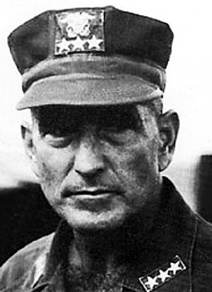
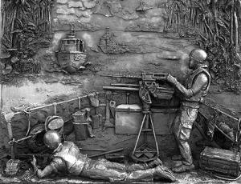

PHẦN MỞ ĐẦU

ể từ Nội chiến, nước Mỹ chưa bao giờ chứng kiến một cuộc chiến gây chia rẽ lòng người như thế. Hơn một thế hệ đã trưởng thành kể từ khi Chiến tranh Việt Nam kết thúc nhưng nhiều người Mỹ vẫn còn bị ám ảnh bởi những ký ức về cuộc chiến ấy.
Đối với người này, nỗi ám ảnh có thể là cái chết của một người thân yêu. Đối với người kia, đó có thể là sự mất mát đồng đội, mất đi cánh tay hoặc một phần nào đó của cuộc sống. Việc hiểu được cuộc chiến, cũng như tìm hiểu nguyên nhân vì sao một người hưởng ứng lời kêu gọi nhập ngũ đã không nhận được sự biết ơn của đất nước, là một quá trình đấu tranh nội tại.
Chiến tranh Việt Nam đã để lại một vết thương sâu hoắm trong tâm hồn người Mỹ là điều không thể phủ nhận. Vết thương ấy rõ ràng còn mưng mủ, giữa những tranh cãi liên quan xuất hiện rất nhiều năm sau khi Sài Gòn sụp đổ. Từ lời thú nhận của cố Bộ trưởng Quốc phòng Robert McNamara – trong cuốn HỒI TƯỞNG1 – tới quyết định của Tổng thống Bill Clinton nối lại quan hệ ngoại giao đầy đủ với Việt Nam vào tháng 7 năm 1995 sau 40 năm gián đoạn, cuộc tranh cãi vẫn tiếp diễn.
 CHÂN TRẦN, CHÍ THÉP chắc chắn sẽ đối mặt với nhiều bất đồng như thế. Tuy nhiên, tôi hy vọng rằng những người vẫn còn bị ám ảnh bởi cuộc chiến hoặc giả đang vật lộn để hiểu nó sẽ đọc cuốn sách này với một thái độ cởi mở. Tôi cảm thấy rất nhiều người trong chúng ta đã không dám chấp nhận một nguyên tắc cơ bản về Chiến tranh Việt Nam – điều mà chúng ta đã chấp nhận sau tất cả các cuộc chiến khác mà nước Mỹ tham gia. Nguyên tắc đó đã thúc đẩy chúng ta, với tư cách một dân tộc, có thể chào đón kẻ thù cũ để xây dựng mối quan hệ hữu nghị, qua đó hàn gắn vết thương chiến tranh. Chúng ta không giữ được cái nhìn ấy, có lẽ bởi đây là cuộc chiến đầu tiên mà nước Mỹ thất bại trong lịch sử.
CHÂN TRẦN, CHÍ THÉP chắc chắn sẽ đối mặt với nhiều bất đồng như thế. Tuy nhiên, tôi hy vọng rằng những người vẫn còn bị ám ảnh bởi cuộc chiến hoặc giả đang vật lộn để hiểu nó sẽ đọc cuốn sách này với một thái độ cởi mở. Tôi cảm thấy rất nhiều người trong chúng ta đã không dám chấp nhận một nguyên tắc cơ bản về Chiến tranh Việt Nam – điều mà chúng ta đã chấp nhận sau tất cả các cuộc chiến khác mà nước Mỹ tham gia. Nguyên tắc đó đã thúc đẩy chúng ta, với tư cách một dân tộc, có thể chào đón kẻ thù cũ để xây dựng mối quan hệ hữu nghị, qua đó hàn gắn vết thương chiến tranh. Chúng ta không giữ được cái nhìn ấy, có lẽ bởi đây là cuộc chiến đầu tiên mà nước Mỹ thất bại trong lịch sử.
Trong chiến tranh, một điều không thể phủ nhận là cả hai phía đều tổn thất. Cả kẻ thắng lẫn người bại đều tổn thương không ít thì nhiều. Bi kịch, sự chịu đựng gian khó và khổ đau là không khu biệt đối với các chiến binh, bất kể họ đứng ở phía nào của chiến tuyến, không khu biệt đối với những gia đình đang chờ đợi người chiến binh trở về; và không khu biệt đối với người dân đã ủng hộ sự nghiệp của các chiến binh đó. “Tính phổ quát” là một nguyên tắc đơn giản, nó thừa nhận khổ đau là một phạm trù phi chiến tuyến, để từ đấy, một khi cuộc chiến kết thúc, một mảnh đất màu mỡ có thể được cày xới để gieo lên hạt giống của tình hữu nghị. Đó là một nguyên tắc mà tôi, khi đang trải qua bi kịch cá nhân, đã không nhìn thấy được.
Hãy để tôi chia sẻ những động cơ thúc đẩy tôi viết cuốn sách này.
Tôi cho rằng có những cựu chiến binh của cuộc chiến Việt Nam, giống như tôi, đã cảm thấy khó khăn trong việc thừa nhận rằng cuộc chiến cứ mãi ám ảnh. Tuy nhiên, đến khi tôi trở lại Việt Nam vào năm 1994, khi mà tôi có thể đối mặt với cuộc chiến nội tâm của mình về bi kịch cá nhân xuất phát từ cuộc chiến kia, tôi đã có được cảm hứng để viết CHÂN TRẦN, CHÍ THÉP.
Tôi nhận thức được rằng rất nhiều người Mỹ đã phải chịu đựng bi kịch từ cuộc chiến tranh Việt Nam lớn hơn tôi rất nhiều. Trải nghiệm trong đời của người này luôn khác với người kia, mất mát cũng thế. Về khía cạnh này, tổn thất mà gia đình và tôi gặp phải đã ảnh hưởng đến chúng tôi rất nhiều. Như một sự nghiệt ngã trớ trêu của số phận, chính những mệnh lệnh quân đội do cha tôi ban hành rốt cuộc đã gây nên cái chết cho anh trai tôi, đó chính là điều mà tôi muốn thừa nhận.
°°°

Gia đình tôi có một truyền thông binh nghiệp đáng tự hào: hầu như mỗi cuộc chiến mà nước Mỹ tham gia kể từ Cách mạng Mỹ đến nay đều có ít nhất một người mang họ Zumwalt phục vụ. Bạn bè thân thiết không hề ngạc nhiên khi biết rằng tất cả các thành viên nam trong gia đình trực hệ của tôi đều xung phong phục vụ tại Việt Nam.Từ năm 1968 đến 1970, người cha giờ đã quá cố của tôi, Elmo R. Zumwalt, Jr., là Phó Đô đốc chỉ huy lực lượng hải quân tại Việt Nam. Trong vai trò “COMNAVFORV” (Commander Naval Forces Vietnam – Tư lệnh Hải lực tại Việt Nam), ông chỉ huy tất cả lực lượng duyên hải và đường sông của Hải quân Mỹ tham chiến tại Nam Việt Nam.
Ngay khi cha tôi đến Việt Nam, thượng cấp trực tiếp của ông, Tướng Creighton Abrams, đã bày tỏ sự không hài lòng về vai trò của Hải quân trong cuộc chiến lúc ấy. Ông muốn Hải quân phải quyết liệt hơn nữa. Trên cơ sở đó, cha tôi đã vạch ra một chiến lược hung hãn hơn, với mục đích biến hệ thống kênh rạch miền Nam Việt Nam, vốn lâu nay bị Việt Cộng sử dụng làm đường chuyển quân, thành bãi chiến trường. (Từ “Việt Cộng” là một cách diễn đạt với hàm ý xấu được chính quyền Sài Gòn và sau đó là quân đội Mỹ sử dụng để chỉ những chiến binh cộng sản tại miền Nam chiến đấu nhằm lật đổ chính quyền. Dù cụm từ “Mặt trận Dân tộc Giải phóng miền Nam Việt Nam” (“People’s Liberation Armed Forces” – PLAF) là chính xác hơn, tôi vẫn dùng “Việt Cộng” bởi từ này quen thuộc hơn đối với người Mỹ. Tôi không có ý thiếu tôn trọng PLAF khi sử dụng từ đó).
Chiến lược mới của cha tôi đã tạo ra những sự xáo trộn lớn cho Việt Cộng khi việc sử dụng hệ thống sông ngòi để tiếp vận và xâm nhập (từ phía Campuchia) sụt giảm nghiêm trọng. Tiếp tế của Việt Cộng suy giảm, thương vong của Lục quân Mỹ ở Đồng bằng Mê Koong (thường gọi là “Đồng bằng”) nhờ đó mà giảm theo. Duy trì sự hiện diện ổn định trong khu vực, người Mỹ đã có thể thúc đẩy tiến trình bình ổn Đồng bằng, làm gia tăng sự ủng hộ của dân chúng đối với chính quyền Sài Gòn và chính phủ Mỹ.
Nhưng sự thành công của chiến lược này cũng phải trả giá. Trong khi thương vong của Lục quân Mỹ giảm thì phía Hải quân tổn thất gia tăng nghiêm trọng với lực lượng đường sông chiếm tới sáu phần trăm trong tổng thương vong hằng tháng. Điều này có nghĩa là nguy cơ bị giết hoặc bị thương đối với những người phục vụ “bên trong” (chiến đấu trong khu vực chiến sự ở Việt Nam) trên những chiếc thuyền tuần tra là ba-trên-bốn – tức cứ bốn người thì ba người đối mặt với nguy cơ – trong thời gian nghĩa vụ một năm. Cha tôi đã lập tức tìm kiếm phương pháp nâng cao an toàn cho lực lượng này.
Hải quân chịu thương vong lớn là do đặc trưng của địa hình họ chiến đấu – sông nhỏ hẹp với cây cối um tùm hai bên. Đối với Việt Cộng, đó là môi trường lý tưởng cho các cuộc phục kích nhằm vào tàu tuần tra; đối với người Mỹ, đó là một địa hình ác mộng cho khả năng phòng thủ. Vùng cây cối rậm rạp ven sông là nơi trú ẩn và là lá chắn tốt cho Việt Cộng trong các cuộc phục kích, giúp họ có thể tấn công vào Hải quân Mỹ ở cự ly rất gần. Với yếu tố bất ngờ, Việt Cộng hầu như không cho thủy thủ đoàn cơ hội nào để phản công.

Trong số những chiến binh đường sông dũng cảm của Mỹ hoạt động trong lực lượng “Hải quân nước nâu” (tức hệ thống đường sông nội địa ở Nam Việt Nam) có người anh trai của tôi, Trung úy Hải quân Elmo R. Zumwalt, III. Từng được biên chế về một vị trí khá nhàn trên khu trục hạm ở Norfolk, Virginia, Elmo tự cảm thấy có bổn phận phải phục vụ tại chiến trường Việt Nam. Anh không bao giờ hỏi ý kiến cha tôi về vấn đề này, bởi Elmo biết cha sẽ đưa ra những lập luận chặt chẽ để thuyết phục anh không nên đi. (Thời còn ở trường trung học và Học viện Hải quân, cha tôi đã được trao nhiều giải thưởng về tranh biện. Tôi và Elmo từ nhỏ đã biết rằng không bao giờ nên tranh luận với ông vì ông luôn là người chiến thắng bằng một vũ khí mà chúng tôi không thể có – lập luận chặt chẽ). Nếu Elmo hỏi ý kiến, cha tôi có thể sẽ không đưa ra những lý lẽ làm nản lòng anh, vì cha tôi hiểu người con trai này có một ý thức trách nhiệm lớn. Trong trường hợp này, cha tôi có thể nói với Elmo những lời thiên về tình cảm, chẳng hạn: “Tại sao lại để cho mẹ con phải lo nghĩ thêm nữa về việc có một đứa con đối mặt với bất trắc trên chiến trường, giữa lúc bà đã có một người chồng đang sống cận kề hiểm nguy như thế?” Elmo cho rằng cha tôi có thể sẽ khuyên anh nên chờ đến khi cha tôi hết thời hạn công tác ở Việt Nam thì anh mới tình nguyện sang đấy. Đó là một sự cân nhắc có cơ sở. Nhưng Elmo biết anh không chọn Hải quân như một sự nghiệp suốt đời. Nếu không xung phong đi lần này, anh có thể sẽ mất cơ hội duy nhất của mình.Elmo đã đến Việt Nam để đảm nhiệm vị trí chỉ huy duy nhất trong sự nghiệp hải quân ngắn ngủi – thuyền trưởng một tàu tuần tra đường sông, thường gọi là “tàu nhanh” – PCF-35 (viết tắt của Patrol Craft Fast – tàu tuần tra cao tốc). Là tư lệnh của tàu cao tốc, Elmo nằm dưới quyền chỉ huy của một guồng máy do cha tôi đứng đầu – đó là COMNAVFORV. Quan hệ gia đình không bao giờ mang lại một đặc ân nào đó trong nhiệm vụ, bởi cả cha và anh tôi đều không nhập nhằng chuyện gia đình và nghĩa vụ quốc gia. Tính cách của hai người là vậy.
(Trong một phút trải lòng về sau, cha tôi thừa nhận mình từng có làm chệch đi một chút so với thông lệ trong quân đội, chỉ bởi anh Elmo phục vụ ở vùng chiến sự. Dù sự thiên lệch đó không có gì quan trọng, nhưng cha tôi vẫn cảm thấy có chút tội lỗi. “Mỗi buổi sáng”, cha tôi nhớ lại, “khi nhận được danh sách thương vong trong các chiến dịch của đêm hôm trước, với tên người được xếp theo thứ tự A, B, C, cha thường bắt đầu đọc danh sách từ cuối lên đầu”. Với họ “Zumwalt”, nếu Elmo nằm trong danh sách thương vong, tên anh chắc chắn sẽ ở hàng cuối. Tôi không nghĩ rằng có ai đó sẽ trách cha tôi về sự thiên vị này). Cha tôi là một người đàn ông đầy đam mê và thông tuệ. Tôi không tin có lúc nào đó ông đưa ra một quyết định quân sự mà không cân nhắc tới những tác hại của nó đối với người lính. Nhưng trong giai đoạn mới nắm quyền chỉ huy tại Việt Nam, có khi ông ở vào hoàn cảnh không thấy hết được tác động từ quyết định của mình. Dù quyết định ấy đã giúp đạt được mục tiêu giảm thương vong cho Hải quân Mỹ, ông không thể ngờ rằng nó cũng chính là nguyên nhân cướp đi mạng sống của người con trai cùng tên với ông.
Khi cân nhắc các lựa chọn khả thi để giảm thương vong cho quân Mỹ, cha tôi nhận thấy rằng chỉ có một cách là triệt tiêu lợi thế bất ngờ của Việt Cộng – bằng cách phá đi hệ thống ẩn náu là những vùng bụi cây rậm rạp ven sông. Năm 1965, Lục quân Mỹ sử dụng một loại hóa chất diệt cỏ để làm rụng lá các vùng rừng gần Sài Gòn, vốn bị tình nghi là nơi kẻ thù hoạt động. Phương pháp này đã được mở rộng khi quân đội tiến tới đóng quân trong rừng. Các nhà sản xuất chất diệt cỏ đã cam đoan với chính phủ Mỹ rằng sản phẩm của họ không gây hại cho con người. Tin vào lời cam đoan đó, cha tôi đã ra lệnh rải thuốc dọc các bờ sông nơi quân của ông thường tuần tra bằng tàu thủy.
Hiệu quả thấy được ngay tức thì – thương vong của Hải quân Mỹ giảm hơn năm lần – chỉ còn chưa đầy một phần trăm mỗi tháng. Dưới góc độ quân sự, quyết định sử dụng chất diệt cỏ là đúng đắn. Việc làm này đã cho phép hàng chục ngàn lính thủy, vốn đối mặt với nguy cơ thương vong cao, có thể trở về nhà.
Nhưng phải rất nhiều năm sau thì những người này mới phát hiện ra rằng cuộc chiến sinh tồn của họ còn lâu mới kết thúc. Họ đã trở về nhà với một quả bom hóa học nổ chậm trong người. Chất diệt cỏ mà họ bị phơi nhiễm, Chất độc Cam1, trái với cam đoan của các nhà sản xuất, là chất gây ung thư. (Mười sáu năm sau đó, cha tôi mới biết rằng các hãng sản xuất chẳng những sai lầm trong việc khẳng định tính vô hại của chất này đối với người, mà – trong vài trường hợp – họ còn nói khác đi so với những gì họ biết).
Bị phơi nhiễm nặng Chất độc Cam trong thời gian phục vụ ở Việt Nam, nhiều cựu chiến binh đã chịu đựng hậu quả kinh khiếp về sức khỏe, với quả bom nổ chậm phát nổ sau quãng thời gian dài ngắn khác nhau. Đối với vài người, vụ nổ đến rất sớm, khi những đứa con do họ sinh ra sau thời gian phơi nhiễm gặp nhiều vấn đề về sức khỏe. Đối với số khác, thời điểm phát nổ đến muộn hơn, có khi phải mười, mười lăm, thậm chí hai mươi năm sau, khi nhiều loại ung thư, mà nay Bộ Cựu chiến binh đã thừa nhận là có liên quan tới Chất độc Cam, tấn công họ. Anh trai tôi nằm trong số những nạn nhân bị ung thư liên quan tới Chất độc Cam.
Cha tôi đã dành tất cả thời gian giúp Elmo chống chọi với căn bệnh ung thư. Cùng nhau, họ tìm kiếm tất cả các giải pháp có thể. Ban đầu, họ tập trung vào các phương pháp y khoa để điều trị; về cuối, họ tìm mọi cách làm chậm sự phát triển chết chóc của căn bệnh. Sự gắn bó giữa họ là vô cùng mật thiết. Có thể nói tình cảm cha con giữa hai người không ai có thể sánh được. Tình cảm ấy đã được diễn tả khá đầy đủ trong lá thư mà Elmo viết cho cha tôi không bao lâu trước khi anh qua đời. Trong thư anh viết: “Ba thân yêu, cả ở Việt Nam lẫn đối với căn bệnh ung thư của con, chúng ta đã cùng nhau chiến đấu và cùng thất bại. Nhưng, chúng ta luôn biết rằng ngay khi lâm vào một trận chiến tuyệt vọng, tình yêu của chúng ta cũng không cho phép một sự thối chí, bất chấp nguy cơ lớn nhường nào, chúng ta cũng không từ bỏ… Con yêu ba vô ngần. Con muốn được chiến đấu bên cạnh ba biết bao. Ba luôn tạo ra sự khác biệt. Ba đã làm cho cuộc chiến cuối cùng của con, trên hành trình tới cõi chết, trở nên nhẹ nhõm và nhân văn hơn. Con yêu ba”.
Vào ngày 13 tháng 8 năm 1988, cuộc chiến cuối cùng mà họ sát cánh bên nhau đã kết thúc. Ở tuổi 42, sau năm năm dũng cảm chiến đấu, Elmo qua đời. Cũng tương tự như cuộc chiến ở Việt Nam, anh đã anh dũng chống lại một kẻ thù giấu mặt, để rồi cuối cùng phải nhận lấy thất bại trước kẻ địch quyết đoán hơn.
°°°
Sau cái chết của Elmo, cha tôi bắt đầu một sự nghiệp mới – thuyết phục chính phủ Mỹ thừa nhận những ảnh hưởng của Chất độc Cam lên sức khỏe con người và bồi thường tài chính cho các chiến binh Việt Nam bị ảnh hưởng.
Một phần nào đó, cái chết của Elmo thúc đẩy cha tôi tham gia cuộc đấu tranh, nhưng mặt khác, việc tham gia của ông cũng xuất phát từ niềm tin thường trực trong ông, rằng trách nhiệm của các tư lệnh chiến trường đối với binh sĩ không kết thúc khi cuộc chiến đã chấm dứt. Trong thời bình, người cựu tư lệnh không được phép quên sự hy sinh của các chiến binh Hải, Lục, Không quân và Thủy quân Lục chiến trong thời chiến tranh. Nỗ lực của cha tôi cùng với nhiều người khác nhằm thúc đẩy thông qua một nghị quyết về vấn đề Chất độc Cam đã dẫn tới việc chính phủ Mỹ tìm thấy bằng chứng thống kê về mối liên quan giữa cựu chiến binh bị phơi nhiễm Chất độc Cam với một số căn bệnh mà họ mắc phải. Từ các phát hiện đó, Bộ Cựu chiến binh đã có chương trình bồi thường cho các cựu quân nhân này.
Sự tham gia của cha tôi vào các hoạt động liên quan tới Chất độc Cam đã đưa ông trở lại Việt Nam vào tháng 9 năm 1994, trở thành vị tư lệnh cấp cao nhất của thời chiến tranh quay lại đây. Tôi có dịp tháp tùng ông trong chuyến đi ấy – cũng là chuyến trở lại Việt Nam đầu tiên của tôi kể từ sau cuộc chiến. Mục đích của cha tôi là tìm kiếm sự hợp tác từ Hà Nội để triển khai một cuộc nghiên cứu chung về Chất độc Cam.
Khi nỗi đau trước cái chết của người anh trai do hậu quả Chiến tranh Việt Nam vẫn còn đầy đọa, việc trở lại đất nước nơi đã gieo mầm cho cái chết đó quả là một thử thách lớn đối với tôi. Trong thời gian chuẩn bị tới Việt Nam, tôi nhận thấy rằng cuộc chiến nội tâm phát khởi từ cái chết của anh vẫn đang âm ỉ. Đã sáu năm kể từ lúc anh qua đời, dù cố gắng nhưng tôi vẫn không thể chấp nhận thực tế này.
Trên đường tới Việt Nam vào năm 1994, tôi không ngừng hồi tưởng về cuộc chiến, và về lần chúng tôi gặp nhau tại căn cứ thuyền cao tốc của anh ở Đà Nẵng vào năm 1969. Anh mới hai mươi ba tuổi; tôi hai mươi. Với tất cả sự ngây thơ của tuổi trẻ, chúng tôi cứ nghĩ rằng chẳng có gì đánh bại được mình, dù dấu hiệu của chết chóc và hiểm nguy hiển hiện khắp nơi: các thủy thủ đang chuyển đạn và quân nhu lên tàu chuẩn bị cho một cuộc tuần tra, nhiều thân tàu thủng lỗ chỗ do đạn địch từ các lần tuần tra trước đang được sửa chữa; các thủy thủ mới đến trình diện, thay thế cho số vừa ngã xuống trong vài ngày trước. Thế nhưng vào lúc ấy, ý nghĩ về cái chết dường như vẫn xa lạ đối với chúng tôi.
Tôi chưa gặp Elmo trong vòng một năm trước đấy. Đó là khoảng thời gian xa cách lâu nhất của chúng tôi vào lúc ấy. Tôi vẫn nhớ cảm giác phấn khích khi được gặp lại anh. Ban đầu tôi định ôm hôn thật chặt; nhưng sau đó có phần do dự, khi chợt nhớ ra cả hai đều đang khoác quân phục. Tôi dừng lại, bước lùi vài bước, rồi chào anh theo nghi thức. Anh đáp lại, và chúng tôi ôm nhau. Hồi nhỏ chúng tôi thường gây gổ nhau, nhưng đến thời trung học và đại học, hai anh em lại rất thân thiết.
Tạm xua đi những ký ức xưa để trở về hiện tại với chuyến đi đến Việt Nam của tôi vào tháng 9 năm 1994. Một lần nữa, nỗi đau, cảm giác trống rỗng sau cái chết của Elmo lại xâm chiếm tâm hồn.
Khi máy bay hướng về Hà Nội, tôi tiếp tục suy nghĩ về cái chết của anh trai và hàng ngàn người đồng hương khác. Tôi muốn là điều gì đó cho họ.
Một vài ngày sau, tôi gặp những kẻ thù cũ, những cựu quân nhân từng phục vụ Quân đội Bắc Việt (North Vietnamese Army – NVA) và Việt Cộng. Tôi nhớ ban đầu mình cảm thấy rất khó chịu. Nỗi giận dữ của tôi về việc những nhân vật này từng là thủ phạm gây ra cái chết của rất nhiều đồng đội người Mỹ không hề nguôi. Trong đầu tôi luôn có một niềm tin xác quyết rằng trong chiến tranh Việt Nam, lực lượng phi nghĩa đã chiến thắng phe chính nghĩa. Năm mươi tám ngàn người Mỹ đã mất mạng khi cố gắng ngăn chặn Cộng sản và bảo vệ tự do cho miền Nam Việt Nam; trong đó có tới hai ngàn năm trăm người còn nằm lại đâu đó giữa các khu rừng già Đông Nam Á. Bi kịch, niềm đau, nỗi thống khổ mà kẻ thù này gieo xuống là vô cùng khủng khiếp. Tôi vẫn tin cuộc chiến tranh đó là một bức tranh trắng và đen – không có màu xám – và rằng những con người này đã gây ra cho nước Mỹ một nỗi đau kinh khiếp. Họ cũng đã gây ra cho tôi và gia đình tôi nỗi đau tột cùng.
Trong khi các cựu quân nhân người Việt mà tôi gặp tỏ ra nhã nhặn và cởi mở thì trong tôi, cơn giận vẫn không ngừng dâng lên. Khi nhìn thẳng vào họ, tôi nghĩ rằng lẽ ra họ không được đứng trước mặt tôi với tư cách là người chiến thắng – bởi đó chỉ là số phận; định mệnh chống lại chúng ta mà thôi. Thế rồi, nhận thức của tôi, nỗi giận dữ của tôi, đã thay đổi nhanh chóng.
°°°
Tôi nhớ rất rõ cái khoảng khắc của sự thay đổi ấy. Đó là ngày thứ ba của chuyến viếng thăm. Chúng tôi gặp Thiếu tướng Nguyễn Huy Phan, một người phục vụ trong ngành quân y và nói tiếng Anh trôi chảy. Ông nói năng nhỏ nh. Lúc đó tôi dường như cảm thấy nguôi giận trước thái độ rất lịch thiệp của ông – một sự đối lập lớn với hình ảnh bạo tàn mà tôi thường hình dung về người chiến binh Bắc Việt.
Ông Phan chia buồn về cái chết của Elmo. Chúng tôi cùng nói chuyện về cuộc chiến và tác động của nó lên cuộc sống những người sống sót. Bác sĩ Phan có vẻ bị tác động trong buổi trò chuyện. Dù tỏ ra trầm ngâm, nhưng ánh mắt đã biểu lộ nỗi thống khổ nội tâm của ông. Khi mắt ông bắt đầu sẫm lại, tôi cảm nhận ra rằng người đàn ông này cũng có một bi kịch lớn trong cuộc đời. Tôi dần có thiện cảm với ông. Sau này, tôi đã biết được nỗi đau lớn của Bác sĩ Phan – ông đã mất đi người cha trước mũi súng của quân Pháp hồi chiến tranh Đông Dương lần thứ nhất và mất đi người em trai trong cuộc chiến lần thứ hai. Nỗi đau mất người em trai đã giày vò ông trong nhiều năm bởi gia đình không thể tìm thấy hài cốt – em trai của ông đơn giản chỉ là một cái tên trong danh sách rất dài những người lính Việt Nam mất tích khi đang tại ngũ. Phải mất tới mười bảy năm thì ông Phan và gia đình mới tìm ra hài cốt của người em trai và đưa về quê hương.
Tôi xúc động trước câu chuyện của Bác sĩ Phan. Khi suy ngẫm về nó, tôi chợt thấy mình đã bắt đầu nhìn về cuộc chiến tranh với một nhận thức hoàn toàn mới. Vượt qua cảm giác tội lỗi, tôi nhận thấy rằng nỗi đau mất đi người thân không hề liên quan tới việc người đó đứng ở phía nào của chiến tuyến. Rõ ràng, nỗi đau mất em trai của ông Phan không hề nhẹ hơn nỗi đau mất anh trai của chính tôi. Lần đầu tiên, tôi không còn nhìn cuộc chiến này theo góc độ “trắng và đen” hay “thiện và ác”. Lần đầu tiên, tôi thấy trái tim mình cùng hòa nhịp với một kẻ thù mà tôi từng rất căm thù, khi nhận thấy rằng ông ta cũng chịu mất mát từ cuộc chiến đó.
Cuộc chiến đã cướp đi sinh mạng những người anh em của chúng ta, nhưng tôi cũng dần nhận ra rằng tôi còn may mắn hơn Bác sĩ Phan – ít ra là tôi còn được biết anh trai mình đã chết như thế nào, chết ở đâu và vào lúc nào. Tôi đã ở bên cạnh anh trai trong giờ phút lâm chung, biết được suy nghĩ sau cuối của anh; tôi biết được rằng anh đã đối mặt với tử thần trong cuộc chiến chống ung thư cũng dũng cảm như lúc anh đối mặt với quân thù trên chiến trường; tôi biết rõ phút lâm chung của anh rất bình yên khi anh trôi dần vào cõi vĩnh hằng trong khi đang ngủ. Còn Phan thì khác, ông phải chờ tới mười bảy năm trời mới tìm thấy một vài, chứ không phải tất cả, chi tiết về cái chết của người em trai.
Trải nghiệm của tôi với Bác sĩ Phan không phải là điều duy nhất khiến tôi thay đổi nhận thức về cuộc chiến.
Cũng trong chuyến đi Việt Nam ấy, tôi đã tới thăm một cơ sở chăm sóc người cụt tay chân, nơi có rất nhiều người bị thương trong chiến tranh vẫn còn phải tiếp tục chịu đựng đau khổ. Một vài người bị cụt hai chi, ba chi, bốn chi do các loại mìn, đạn pháo, bom gây ra. Hàng ngàn cựu quân nhân vẫn phải chờ đợi những đôi chân đôi tay nhân tạo để có thể đi lại một cách độc lập. Nhiều đã phải chờ đợi các thiết bị ấy từ khi cuộc chiến kết thúc.
Năm 1992, theo đề nghị của một doanh nhân Mỹ gốc Việt. cha tôi đã tham gia vào nỗ lực thiết lập một cơ sở tại Việt Nam nhằm cung cấp chân tay nhân tạo và các thiết bị hỗ trợ cho các cựu quân nhân người Việt. Trong chuyến đi tháng 9 năm 1994, cha tôi đã trao tặng cho người nhận thứ 12.000 thuộc chương trình này. Đó là một khoảng khắc xúc động, khi cha tôi, lúc này đã 73 tuổi, nâng một người cụt cả hai chân ra khỏi ghế, đặt lên chiếc xe lăn mà cựu quân nhân này nhận được lần đầu tiên trong đời.
Tôi cảm thấy rất lạ là – dù tôi rất yêu cha và hai chúng tôi rất gần gũi nhưng hai người chưa bao giờ nói chuyện với nhau, một cách riêng tư, về việc chúng tôi đã chịu đựng sự mất mát Elmo như thế nào. Tôi không nghĩ rằng sự im lặng đó là biểu hiện của thái độ coi nhẹ khổ đau thường có ở những thành viên nam của một gia đình giàu truyền thống quân sự. Tính cách ấy, một tính cách của người cha quân nhân do Robert Duval thủ vai trong phim “Santini vĩ đại”, rất đối lập với người cha mà tôi đã cùng sống. Tôi không hiểu tại sao chúng tôi không bao giờ nói chuyện về cái chết của Elmo. Có một sự im lặng được chấp nhận một cách vô thức giữa chúng tôi. Cũng có thể tôi sợ phải đối diện với một phản ứng đầy xúc cảm từ cha khi tôi đề cập chuyện đó với ông, và ngược lại – dù chúng tôi từng rơi nước mắt không hề che đậy trong những bi kịch khác của gia đình.
Trong rất nhiều phẩm hạnh của cha tôi, thì phẩm hạnh lớn nhất đó là sự cảm thông đối với những người kém may mắn hơn. Ông dành phẩm hạnh ấy cho người khác, bất kể là bạn hay thù. Đó là phẩm hạnh khiến tôi khâm phục nhất trong con người đầy nhân ái này.
Chứng kiến cảnh cha tôi nhấc người thương binh Việt Nam đặt vào xe lăn – và cả hai cùng cười – tôi mới vỡ lẽ rằng, dù cả hai chúng tôi đều giữ im lặng với nhau về cái chết của Elmo, nhưng cha dường như đã xua đuổi được “bóng ma” của bi kịch ấy. Sự xua đuổi đó có là một chủ ý hay không, tôi không bao giờ biết được – nhưng tôi biết rõ rằng những nỗ lực nhân đạo và lòng trắc ẩn đã giúp ông dần bỏ lại sau lưng những bi kịch của cuộc chiến tranh. Tôi sử dụng cụm “những bi kịch” vì tôi không chỉ nói về cái chết của anh Elmo, mà còn về những thủy thủ can trường khác dưới quyền chỉ huy của cha tôi đã không thể trở về nhà. (Suy ngẫm về ba cuộc chiến tranh đã từng tham gia, cha tôi có lần nói rằng Việt Nam là cuộc chiến khó khăn nhất đối với ông về mặt cá nhân, Không giống Chiến tranh Thế giới thứ II và Chiến tranh Triều Tiên, khi mà mối hiểm nguy xuất phát từ những quyết định của ông chia đều cho ông và các binh sĩ, thì tại Việt Nam, hiểm nguy chủ yếu dồn lên vai người lính. Ngay sau khi tới Việt Nam với vai trò tư lệnh, cha tôi bắt đầu cùng với các thủy thủ đi tuần và đánh trận. Một sĩ quan thuộc cấp của ông sau này viết: “Tôi nhớ rất rõ rằng ông đã hiện diện một cách lộ liễu trong vùng chiến sự”. Nhưng cha tôi đã không thể tiếp tục các hoạt động như thế sau khi tướng Abrams bày tỏ lo ngại về khả năng một vị tư lệnh cận chiến bị bắt hoặc thiệt mạng).
°°°
Động lực để tôi viết cuốn sách này đến từ hai nguồn: lòng trắc ẩn, mà tôi đã được chứng kiến, của cha tôi dành cho kẻ thù cũ; và sự thấu hiểu về nỗi đau chung sau khi tôi gặp gỡ các cựu quân nhân Việt Nam như Bác sĩ Phan – những người cũng đã đánh mất một phần đời trên các chiến trường trong cuộc chiến ấy. Tôi không hề ngạc nhiên trước nguồn cảm hứng mà cha tôi truyền cho; nhưng tôi lại rất ngạc nhiên khi cảm hứng còn đến từ kẻ thù cũ – vì trước đây tôi chưa từng nghĩ rằng mình sẽ có ngày xúc động trước nỗi đau của họ.
Trải nghiệm của tôi với Bác sĩ Phan cũng như lần tôi chứng kiến các cựu quân nhân Việt Nam bị thương tật vào năm 1994 đã lần đầu tiên cho tôi một lý do để suy ngẫm về nguyên tắc phi chiến tuyến của nỗi đau. Lần đầu tiên, tôi thấy rằng tác động của chiến tranh lên TẤT CẢ các nạn nhân là như nhau. Những người đàn ông và đàn bà, những binh sĩ và thường dân Việt Nam mà tôi có dịp gặp đã giúp tôi hiểu được rằng chiến tranh như một lưỡi dao sắc cạnh ở cả hai phía, làm cho bên nào cũng đớn đau. Họ giúp tôi hiểu rằng nỗi đau khổ mà chiến tranh gây ra là không biên giới. Đó là một nỗi đau phổ quát.
Trong cuốn sách này, tôi không có dụng ý coi nhẹ nỗi đau và sự thất vọng của người Mỹ. Như tôi đã nói lúc đầu, trải nghiệm về cuộc sống của mỗi người là khác nhau, và bi kịch cũng như thế. Nhưng chiến tranh, với bản chất tàn bạo của nó, đã tạo ra những nạn nhân ở cả hai phía. Và khi chiến trường phủ lên toàn bộ một đất nước – như trong Chiến tranh Việt Nam – thì toàn bộ nhân dân của đất nước ấy đều là nạn nhân.
Neil Sheehan, một phóng viên thời Chiến tranh Việt Nam, ban đầu đã ủng hộ quyết định tham chiến của Mỹ. Nhưng đến năm 1967 thì ông thay đổi lập trường. Về sau, ông viết cuốn SỰ DỐI TRÁ RỰC RỠ (A BRIGHT SHINING LIE) lên án sự can dự của nước Mỹ. Cuốn sách đã được trao giải Pulitzer. Là người ủng hộ nước Mỹ tham chiến, tôi đã không đồng tình với những chỉ trích của Sheehan nhằm vào Chính phủ.
Hiện nay, tôi nhìn cuốn sách của Sheehan với một cặp mắt khác. Dù vẫn không tán đồng cách tố cáo vai trò của Mỹ ở Đông Nam Á, tôi thấy rằng mình khó có thể chấp thuận một cách mù quáng những chính sách mà nước Mỹ theo đuổi ở khu vực. Sự thay đổi thái độ của Sheehan về cuộc chiến tranh xuất phát từ trải nghiệm của chính ông tại khu vực này và các cuộc tiếp xúc với người Việt Nam, cũng giống như tôi rất nhiều năm về sau. Chính nhờ tiếp xúc trực tiếp với phía bên kia mà cuối cùng ông đã trở thành người phản đối cuộc chiến.
Giờ đây, sau thời gian dài tìm hiểu người Việt Nam một cách trực tiếp, tôi bắt đầu hiểu rõ hơn thông điệp mà Sheehan gửi gắm trong cuốn sách. Chúng ta phải học từ những thông điệp của ông và có thể cả của tôi nữa, để sai lầm trong cuộc chiến tranh tại Việt Nam không bao giờ xảy ra với các thế hệ người Mỹ trong tương lai.
Sheehan còn viết một cuốn sách nữa về Việt Nam có nhan đề SAU CHIẾN TRANH: HÀ NỘI VÀ SÀI GÒN1. Cuốn sách là một cái nhìn so sánh đất nước này trong lần đầu tiên ông đặt chân tới vào năm 1962, trước thềm cuộc chiến tranh với người Mỹ, và năm 1989, khi người dân tại đây được thụ hưởng khoảng thời gian thái bình dài nhất của họ trong thế kỷ 20. Ông viết:
“Chúng ta, những người Mỹ, vốn tự cho mình là ngoại lệ của lịch sử, cũng có thể mắc sai lầm như phần còn lại của nhân loại; chúng ta có thể thủ ác dễ dàng như khi hành thiện. Tất cả chúng ta đã quá kiêu ngạo trong thời kỳ xấc xược ấy.
Chúng ta không thể hiểu được rằng chúng ta đã theo đuổi những điều không tưởng và đã gây ra một bi kịch tột cùng cho chính chúng ta cũng như cho dân tộc Việt Nam và các dân tộc khác tại Đông Dương”.
Sheehan đã đi đến một kết luận chống lại hoàn toàn những luận điệu của giới chức Mỹ trong suốt cuộc chiến, rằng Việt Nam chưa bao giờ là một mối đe dọa đối với nước Mỹ: “Họ đơn giản chỉ muốn chúng ta trở về nhà, và họ sẽ không bao giờ ngừng kháng cự, bất chấp họ và chúng ta phải trả giá thế nào, cho tới lúc chúng ta rút đi. Tôi mất năm năm để nghiệm ra điều đó”.
Còn tôi thì phải mất nhiều thời gian hơn để đi đến cùng một kết luận – một kết luận mà tôi có được sau khi chuyên tâm tìm hiểu người Việt Nam.
Trong cuốn sách của mình, Sheehan nhớ lại một khoảng khắc của chiến tranh, mà tôi cảm thấy rằng đã tạo nên ảnh hưởng đối với tôi. Trở lại Mỹ Tho ở Đồng bằng sông Mê Kông, Sheehan bắt gặp một sân bóng chuyền, gợi ông nhớ tới cố Đại tá John Vann, người đã chỉ huy quân Mỹ ở đấy:
“Đó là một buổi chiều muộn và mành lưới được căng lên. Tôi dường như nghe tiếng cáu gắt của Vann: ‘Nào, hãy gọi hai đội bóng ra đây’, rồi tiếng la hét của các đại úy và trung úy trong trận đấu. Những người đó cùng trang lứa với tôi nên tôi dễ dàng đồng cảm với họ. Họ từng là những sĩ quan tận tụy, những người xuất sắc nhất mà Lục quân Mỹ có được, luôn sẵn sàng xung trận, luôn tin vào sự nghiệp và lý tưởng. Khi chúng tôi leo lên trực thăng cùng đội xung kích giữa tiếng gầm của động cơ và đám bụi bay mù mịt, chúng tôi thường nghĩ: ‘Rồi ngày chiến thắng sẽ đến, và có một vùng đất tốt hơn đang đợi chúng ta’. Chúng ta đã không chiến thắng, và do sự xuất hiện của chúng ta mà Việt Nam đã trở thành một mảnh đất đầy thương tích. Trong ánh chạng vạng trên sân bóng, tôi băn khoăn không biết những sĩ quan trẻ tuổi kia nghĩ gì về những con người can trường khác đang chui trong những căn hầm ngoài kia nếu họ biết sự thực về cuộc chiến mà họ phải tham gia”.
Những chiến binh dũng cảm có mặt ở cả hai phía chiến tuyến. Tương tự, nỗi đau và sự mất mát cũng giáng xuống đầu cả hai phía. Suốt một thế hệ, qua sách và phim ảnh, chúng ta đã nghe rất nhiều câu chuyện từ phía người Mỹ; giờ đã đến lúc cùng lắng nghe câu chuyện từ phía Việt Nam.
Cuốn sách này là tập hợp những thông tin từ gần 200 cuộc phỏng vấn với cựu cuộc chiến Việt Cộng và Bắc Việt cũng như một số dân thường Việt Nam. Những người được phỏng vấn bao gồm cả Đại tướng Võ Nguyên Giáp, Thượng tướng Trần Văn Trà, Tư lệnh quân Việt Cộng; Trung tướng Đồng Sĩ Nguyên, Tư lệnh Binh đoàn Trường Sơn (lực lượng phụ trách xây dựng và duy trì Đường mòn Hồ Chí Minh); cùng nhiều sĩ quan cao, trung cấp và một số người có địa vị khác. Tôi được thoải mái tiếp cận những người được phỏng vấn. Dạng câu hỏi trong các cuộc phỏng vấn là tương tự nhau, nhưng mỗi cựu quân nhân đều có một câu chuyện độc đáo để kể. Giữa những câu chuyện riêng của mỗi người ấy, có một sợi chỉ xuyên suốt rất dễ nhận ra: đó là sức mạnh ý chí – họ đã quyết tâm giành chiến thắng bằng cách vượt qua bất cứ thách thức hoặc hiểm nguy nào. Trong Chiến tranh Việt Nam, người Mỹ dựa vào sức mạnh công nghệ vũ khí vượt trội; người Việt Nam phải dựa vào những thứ khác. Họ quay về truyền thống của mình – đó là truyền thống chống ngoại xâm có từ ngàn đời, khi đất nước liên tục bị xâm lăng. Trong cả nghìn năm ấy, tinh thần dân tộc và lòng tự hào luôn bùng cháy, thổi lên trong lòng mỗi người dân Việt Nam quyết tâm đánh đuổi ngoại bang. Tinh thần dân tộc, lòng tự hào và quyết tâm ấy phát triển thành một sức mạnh vĩ đại nhất – một CHÍ THÉP – giúp họ thực hiện được điều tưởng như không thể. Để cuối cùng, CHÍ THÉP đã đánh bại công nghệ của siêu cường hùng mạnh nhất thế giới.
Điều đáng tiếc là chúng ta đã không hiểu được phẩm chất này của người Việt Nam. Chúng ta không nhận thấy, trong bản phân tích cuối cùng rằng chiến thắng không quyết định bởi công nghệ mà bởi quyết tâm của con người. Ý chí của họ không bao giờ sụt giảm dù họ thiếu công nghệ, dù họ phải chiến đấu với những đôi CHÂN TRẦN. Công nghệ vượt trội của họ, trên thực tế, chính là sức mạnh nội tâm để chịu đựng thách thức, khổ đau và gian khó khốc liệt nhất, buộc người Mỹ phải lâm vào cuộc chiến tranh dài nhất trong hai thế kỷ lịch sử của mình. Như vị tướng của Chiến tranh Thế giới thứ II George Patton từng nói: “Đánh nhau bằng vũ khí, chiến thắng bằng con người”.
Hơn ba thập niên kể từ ngày Sài Gòn sụp đổ, đã đến lúc cần hiểu hơn về kẻ thù mà chúng ta từng đối mặt cũng như cái CHÍ THÉP của họ đã đóng vai trò như thế nào trong chiến thắng của Việt Nam và thất bại của Mỹ. Cách tốt nhất để làm điều đó là chia sẻ trải nghiệm của những con người đã sở hữu những phẩm chất ấy – những phẩm chất đã giúp họ sống, chiến đấu và chịu đựng trong suốt cuộc chiến tranh giữa Việt Nam và Mỹ.
1. Robert McNamara (1916-2009) là Bộ trưởng Quốc phòng Mỹ giai đoạn 1961-1968. Năm 1995, ông cho ra mắt cuốn In Retrospect: The Tragedy and Lessons of Vietnam – Hồi tưởng: Bi kịch và Những bài học về Việt Nam
2. Agent Orange – hay A.O. – là hóa chất chứa dioxin, thường được sử dụng để làm rụng lá cây A.O. trong tiếng Việt thường được dịch là “chất độc da cam”, “chất độc màu da cam”. Theo một thống kê, trong Chiến tranh Việt Nam, Mỹ đã rải tới 80.000.000 lít A.O.
3. Neil Sheehan (sinh 1936) từng là phóng viên của tờ The New York Times. Năm 1971, ông tham gia vào vụ tiết lộ hồ sơ Lầu Năm Góc về Chiến tranh Việt Nam, dẫn tới cuộc tranh cãi lớn về chính trị, pháp lý và tự do báo chí tại Mỹ. Hai cuốn sách về Chiến tranh Việt Nam của Sheehan mà tác giả Zumwalt đề cập là A Bright Shining Lie: John Paul Vann and America in Vietnam (1988) và After The War Was Over: Hanoi and Saigon (1993).